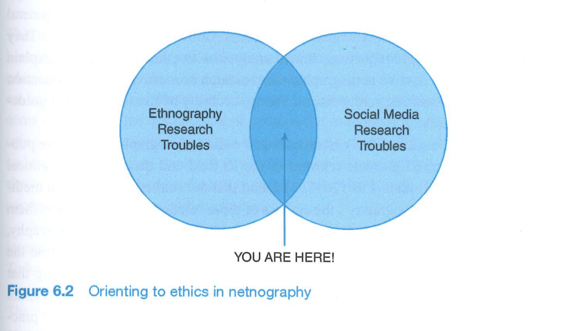
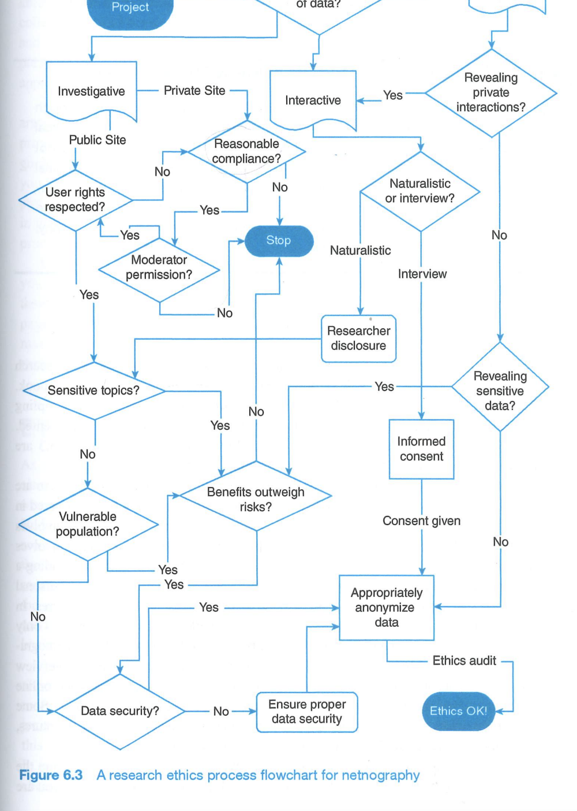

| Category | Forum / Platform | Type of interaction | Key features |
|---|---|---|---|
| Direct clones | r/AITAH | Judgment | Same format as AITA; explicit verdicts. |
| r/AmITheButtface | Judgment | Softer language; same moral evaluation structure. | |
| r/amiwrong | Judgment | Focus on correctness rather than morality. | |
| r/AmItheIdiot | Judgment | Emphasis on competence and stupidity. | |
| Spin-offs & variants | r/AmIOverreacting | Judgment (emotions) | Evaluates whether reactions are justified. |
| r/AmITheDevil | Judgment (extreme cases) | Highlights clearly immoral behavior. | |
| r/AmItheKameena | Judgment (cultural variant) | Indian cultural framing of AITA-style dilemmas. | |
| r/choosemyalignment | Judgment (gamified) | Uses moral alignment categories. | |
| Adjacent (advice + judgment) | r/relationships | Advice + implicit judgment | Relationship dilemmas with moral evaluation embedded in advice. |
| r/relationship_advice | Advice + implicit judgment | Similar format with strong normative commentary. | |
| Advice column equivalents | Dear Prudence (Slate) | Expert + audience judgment | Narrative dilemmas with explicit moral framing. |
| Ask Amy | Expert judgment | Traditional advice column format. | |
| Q&A platforms | Quora | Mixed (advice/judgment) | “Was I wrong?” questions; variable quality of moral reasoning. |
| Stack Exchange | Structured Q&A | Less moral focus; still scenario-based evaluation. | |
| Confession / story platforms | Whisper | Implicit judgment | Anonymous confessions; moral evaluation in comments. |
| Tumblr | Story + discourse | Narratives with distributed moral reactions. | |
| Conceptual category | — | — | “Judgment forums”, “crowdsourced morality”, “verdict-based communities”. |
Working with secondary data, you do not have the leisure to define your objects of study as you wish, but you are obliged to consider the way in which they are formatted by the technical and organisational standards of the medium.— VENTURINI, JACOMY & JENSEN · 2018


Record Active threads going back a decade; posts from today. Thread "urban vs. rural bugging out" — 90+ replies, members cite specific personal experience and geography. High word count; extended first-person narratives common.
Research Strong potential for studying identity work. Urban/rural variation is useful for the diversity criterion. Thread on media misrepresentation suggests stigma awareness — relevant to social movement literature.
Reflect My initial assumption was that prepper forums would be dominated by political extremism. This thread is pragmatic and technical. I should not let that expectation shape which threads I treat as typical.